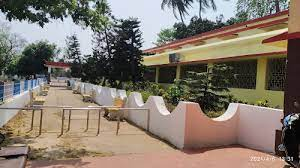
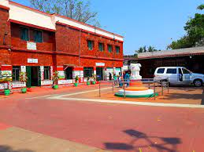
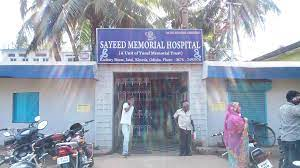

Medical Department consists of DRH/KUR & 10 (Ten) Health Units of Khurda Road Division. It is headed by Chief Medical Superintendent and assisted by one Sr.Divisional Medical Officer (Administration). This office situated in Divisional Railway Hospital Khurda Road.
The Medical Officer (I/C) Community Health Centre, Jatni, Khurda is located at Jatni, Khurda, Odisha. This office comes under the Department of Health & Family Welfare, Govt. of Odisha. The main function of this institution is to interest of the public service.
Sayeed Memorial Hospital in Khurda has a supportive and friendly staff, and the latest medical know-how to help patients.
